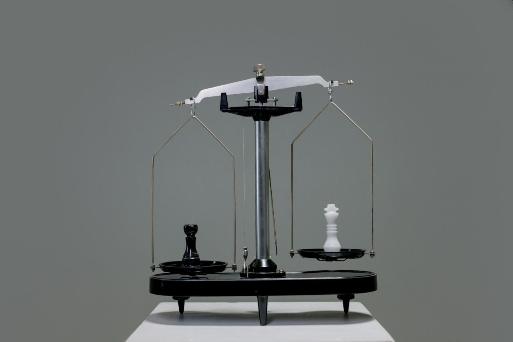

Energiebalans: de ultieme gids voor gewichtsverandering
Wil je weten hoe je kunt afvallen of aankomen? Het enige wat je moet weten is de energiebalans. Dit is de verhouding tussen energie-inname en energieverbruik en is leidend voor gewichtsverandering. Ontdek wat energie is, hoe het wordt gemeten en hoe je energieverbruik en energie-inname kunt beïnvloeden om jouw doelen te bereiken.

Het enige wat je moet onthouden is dat de energiebalans, over langere termijn, leidend is voor afvallen of aankomen. No matter what.
Maar… wat is de energiebalans? De energiebalans is de verhouding tussen energie-inname en energieverbruik.
Er zijn drie principes van de energiebalans:
- Consumeer je meer calorieën dan dat je verbruikt,
dan sla je energie op waardoor je in lichaamsgewicht stijgt
- Verbruik je meer energie dan dat je consumeert,
dan verlies je energie waardoor je in lichaamsgewicht daalt
- Wanneer er een gelijke energie-inname en energieverbruik is,
dan blijf je op hetzelfde lichaamsgewicht
Zo simpel is het.
Deze drie principes gelden op lange termijn. Op korte termijn kan je namelijk in gewicht afvallen of toenemen zonder dat de energiebalans verandert. Bijvoorbeeld wanneer je veel meer koolhydraten hebt gegeten dan normaal, is de kans groot dat je meer vocht gaat vasthouden, wat ook resulteert in gewichtstoename. Lichaamsgewicht is niet enkel vetmassa maar ook spiermassa, vochtmassa, botmassa en maaginhoud.
Om dit goed te begrijpen, moeten we nog een stapje terug. Want, wat is energie?
Energie
Energie is een fundamentele natuurkundige grootheid, dat is een meetbare eigenschap van een natuurkundig verschijnsel. Het is een theoretische entiteit die wij hebben bedacht als verklaring voor hoe de natuur werkt. Energie is niet te observeren en dus een achteraf verzonnen concept wat gebruikt wordt om natuurfenomenen zoals beweging te verklaren.
Calorieën
Een manier waarop energie kan worden gemeten is in calorieën. Wanneer er over calorieën in voeding wordt gesproken, wordt er eigenlijk kilocalorieën bedoeld. Een calorie is namelijk één duizendste van een kilocalorie. Een calorie is een maatstaf van energie. Het is de ruwe hoeveelheid aan energie die nodig is om de temperatuur van 1 gram water met 1 graden Celsius te verhogen, onder normale luchtomstandigheden.
Een andere maatstaf van energie is de joule (of kilojoule). Net zoals dat je kilogrammen naar ponden kunt omrekenen, geldt in dit geval de onderstaande formule.
1 kcal = 1000 cal = 4184 joules = 4,184 kilojoules (kJ)
Nu je weet wat energie is, kunnen we gaan kijken naar wat energieverbruik en energie-inname is.
ENERGIEVERBRUIK
Het lichaam heeft energie nodig voor thermodynamica: beweging, het verrichten van chemische reacties en het produceren van hitte. Thermodynamica wordt later in deze blog verder uitgelegd.
Ons totale dagelijkse energieverbruik (Total Daily Energy Expenditure = TDEE) is dus de totale energie/calorieën die je in een dag verbruikt. Dat aantal is voor iedereen anders. Het totale dagelijkse energieverbruik bestaat uit verschillende componenten:
- Het BMR of Basal Metabolic Rate of basaal metabolisme of simpelweg, metabolisme is het grootste deel van je totale energieverbruik. Namelijk zo'n 55 tot 65%. Het BMR houdt je als het ware in leven. Je verbruikt hier energie voor het functioneren van alle organen. Het is ook de energie die je lichaam nodig heeft voor haar lichamelijke functies, zoals ademen. Moest je dus een hele dag levenloos in je bed liggen, zonder te eten, zou je alsnog energie verbruiken.
SN: dit is ook de energie die nodig is om spiermassa te onderhouden. Hoe meer spiermassa, hoe hoger je metabolisme waarschijnlijk gaat zijn.
- De fysieke activiteit, bestaande uit NEAT en Exercise, is de energie voor beweging en activiteit. De totale fysieke activiteit gaat zo'n 25 tot 35% van het totale energieverbruik zijn.
- NEAT staat voor Non Exercise Activity Thermogenesis (+/- 20%). De naam zegt het zelf, dit is alle beweging die je doet zonder effectief te trainen.
Bijvoorbeeld: boodschappen doen, je huis schoonmaken, (irritant) trillen met je been, de trap nemen i.p.v. de lift, naar de keuken lopen om voedsel te zoeken, …
Hier zit vaak het verschil tussen mensen die niet kunnen afvallen en mensen die alles kunnen eten zonder bij te komen. Het kan je energiebalans positief of negatief laten uitkomen.
- Onder Exercise valt natuurlijk training (+/- 10%). Het is de energie die je verbruikt tijdens het trainen. Dit zijn niet de calorieën waar je rekening mee wilt houden wanneer je wilt afvallen of bijkomen.
"You can't out-train a bad diet."
Een bekend voorbeeld is dat mensen gaan sporten zodat ze meer kunnen eten. Mensen gaan sporten en eten dan meer dan dat ze normaal zouden doen. De kans is groot dat ze dan ook meer consumeren dan dat ze hebben verbruikt tijdens het sporten.
Omdat sporten weinig calorieën verbruikt, is het geen reden om niet te sporten. Elke vorm van sport is goed voor de algehele gezondheid. Met krachttraining verbrandt je minder calorieën op het moment zelf dan cardio. Toch verkiezen wij krachttraining boven cardio. Wij kijken naar de lange termijn en zoals je ondertussen weet, zorgt meer spiermassa voor een hoger metabolisme.
- TEF of Thermic Effect of Food of simpelweg, vertering is zo'n 5 tot 10% van het totale energieverbruik. TEF is letterlijk de energie die je lichaam verbruikt om voeding te verteren. Er zijn een aantal factoren die hier invloed op hebben:
- Lichaamsvetpercentage
- Koolhydraattolerantie
- Voedselbewerking
- Maaltijdsamenstelling
- Maaltijdfrequentie
Mensen met overgewicht zullen een lagere TEF hebben dan krachtsporters met een lager vetpercentage die een eiwitrijk dieet volgen en volwaardige/onbewerkte producten met een hoog voedingsvolume en veel vezels consumeren.
Energie-inname
Energie komt het lichaam binnen in de vorm van voeding. Echter is niet alle energie uit voeding direct bruikbaar voor het lichaam. Het moet eerst worden verteerd en vervolgens worden geabsorbeerd. Wat overblijft noemen we metaboliseerbare energie.
Voedingsenergie staat dus niet gelijk aan metaboliseerbare energie. Er gaat via diverse paden wat energie verloren. Die verloren energie bedraagt zo'n 3-12% van de energie-inname met 1-2% energieverlies via de urine en 2-10% energieverlies via de ontlasting. Wat overblijft is dus de metaboliseerbare energie voor het metabolisme en fysieke activiteit.
Thermodynamica
Zoals je eerder hebt gelezen heeft het lichaam energie nodig voor thermodynamica. Thermodynamica is de omzetting van energie. Energie kan niet worden vernietigd, het gaat niet verloren maar gaat over in een andere vorm:
- Beweging oftewel kinetische energie = energie van bewegende objecten
- Het verrichten van chemische reacties oftewel chemische energie = opgeslagen in voeding en lichamelijke weefsels
- Het produceren van hitte oftewel thermische energie = energie die we voelen als temperatuur
Conclusie
Het verbranden van energie/calorieën/vet wilt niet zeggen dat je gaat afvallen of vet gaat verliezen. Vetverbranding zegt niets over het bijkomen of verliezen van vetmassa op de lange termijn. Op verschillende momenten van de dag sla je energie op en verlies je energie. Het enige wat er uiteindelijk toe doet, is die energiebalans. Wil jij je lichaam veranderen, dan moet je daar mee rekening houden.
Je kan alle diëten proberen, uiteindelijk kom je sowieso weer terug bij de energiebalans, deze is leidend.
Wil je dit toepassen op jouw situatie?
In een intakegesprek bekijken we je doel en wat daar voor jou voor nodig is.